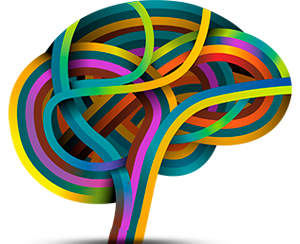
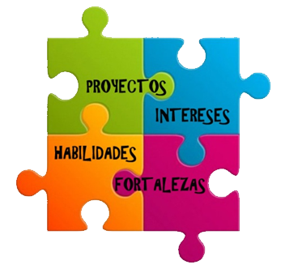

Un paciente se encuentra sujetado a una historia particular, a su incosciente, a deseos de otros, miedos.. a través de la terapia se activa un proceso a través del cual paciente y terapeuta trabajan juntos para desentrañar los misterios que esconde el incosciente, la historia personal de cada uno, los deseos más ocultos con el fin de buscar el alivio sintomático.
Psicodiagnosticos.
Aptos Psicologicos.
Proceso psicodiagnóstico que consiste en una o varias entrevistas y administración de Baterías de Test para la evaluación de la personalidad del consultante. Al final del proceso se realizará la emisión del Apto Psicológico.

Orientación
Vocacional.
Orientación psicológica focalizada en el logro de determinados objetivos, siendo fundamental el esclarecimiento de la identidad vocacional. Apunta al autoconocimiento (intereses, capacidades, conflictos, ansiedades, etc.); conocimiento del medio ocupacional y las opciones educacionales. El proceso puede ser individual, grupal o institucional.

Acompañamiento
Terapeutico.
Integración
Escolar.
Acompañante terapéutico: El profesional actúa como auxiliar de salud, respondiendo a las necesidades urgentes del paciente y su familia; trabaja con equipo de profesionales y el proceso se lleva a cabo en diferentes ámbitos (hogar, escuela, instituciones, etc) según se requiera.
Integración escolar: contribuye en el mejoramiento continuo de la calidad de la educación, favoreciendo la socialización y el logro de los aprendizajes, especialmente de aquellos que presenten una necesidad educativa especial.